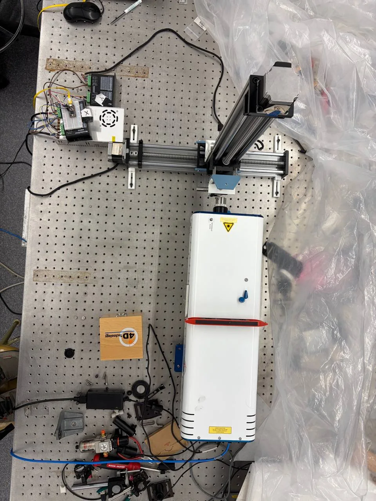
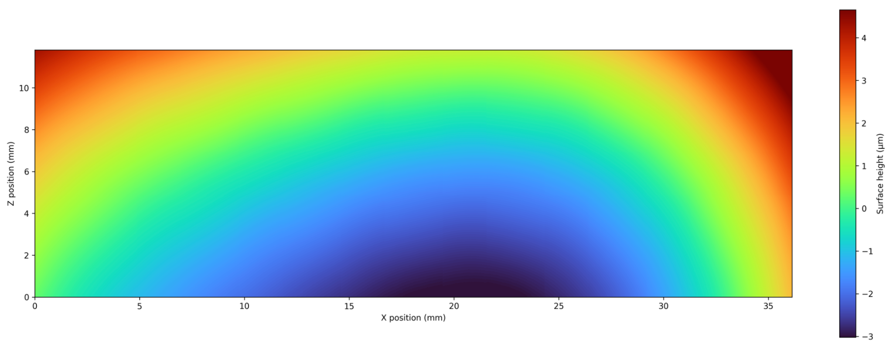
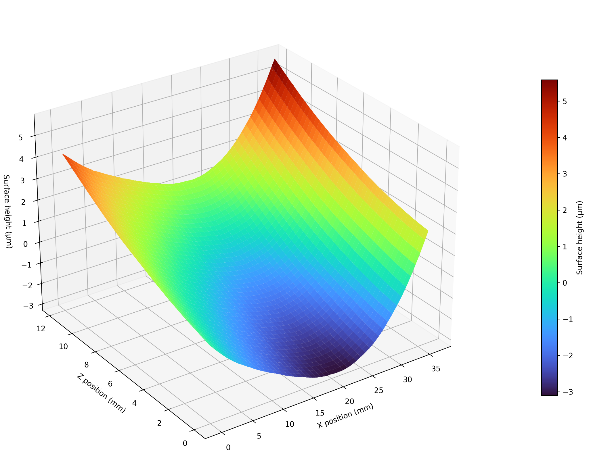
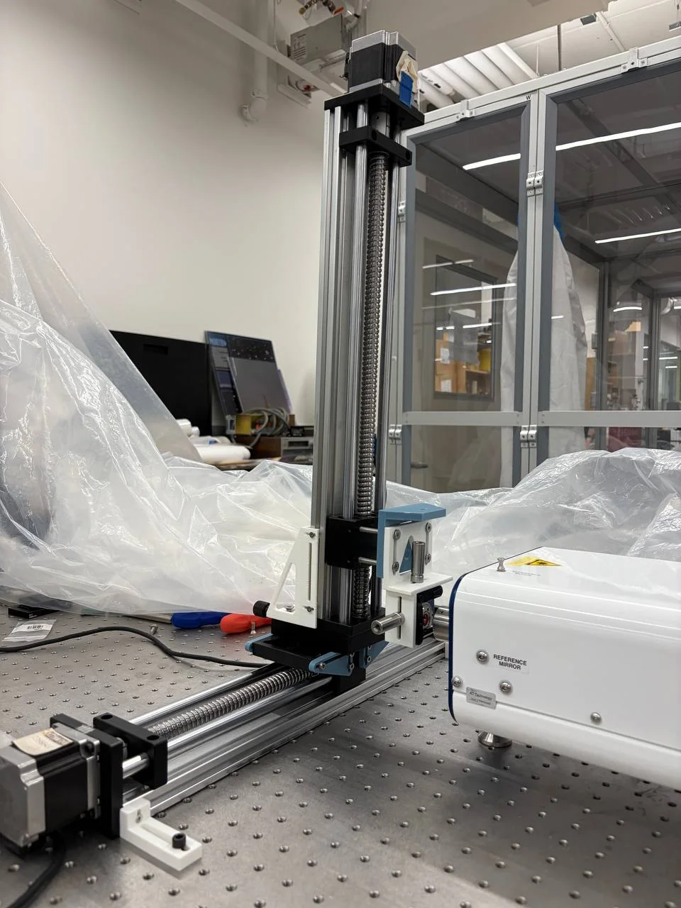

Optical metrology · Automation · Scientific computing
Interferometric
Surface Profiler
Automated multi-axis scanning and computational reconstruction of optical surfaces larger than a single interferometer field of view.

Overview
Extending a limited field of view
The PhaseCam can resolve local surface form with high spatial density, but its field of view is smaller than the mirror. I developed a translation platform and a Python reconstruction workflow that acquire overlapping surface maps, determine their relative alignment, correct tile-to-tile offsets, and combine them into a continuous aperture map.
The system uses independent horizontal and vertical stages. The mirror moves while the interferometer remains fixed, preserving the optical measurement geometry during the scan.
Engineering problem
One measurement cannot cover the complete optic.
Each acquisition captures only a local patch. The useful full-aperture result depends on repeatable motion, controlled overlap, robust registration, and blending that does not introduce artificial seams.
Experimental system
Hardware architecture
A fixed interferometer observes a mirror translated in X and Z by stepper-driven linear stages.



Acquisition strategy
Fourteen overlapping measurements
Seven tiles are acquired along each row. Row 2 is positioned above Row 1, with nominal 30% overlap between adjacent fields.
Motion demonstration
Stage movement during acquisition
The stage advances by a calibrated increment, pauses for mechanical settling, and then allows the next surface map to be acquired.
Computational methods
From XYZ files to a continuous surface
The reconstruction separates geometric placement from surface-height correction so that errors can be diagnosed at each stage.
- 01Load XYZ tilesReconstruct each 2020 × 2020 grid and preserve invalid pixels.
- 02Reference removalRemove piston and tilt before comparing local surface structure.
- 03Overlap extractionSelect common valid regions using the expected stage displacement.
- 04RegistrationRefine relative X–Z placement through normalized cross-correlation.
- 05Offset solutionEstimate tile and row height corrections from shared regions.
- 06Weighted blendingTaper overlap contributions to avoid abrupt seams.
- 07Surface reconstructionGenerate 2D, 3D, profile, and validation outputs.
Registration
Alignment is inferred from shared surface structure
Stage motion supplies the initial placement. Image registration then searches for the relative shift that maximizes similarity within the overlap.
Before
Nominal stage position can leave a small lateral mismatch.
After
Cross-correlation refines the shift before height offsets are solved.
Validation values are from the tile-core row comparison performed during reconstruction; they characterize consistency between the two acquired rows, not the absolute accuracy of the interferometer.
Reconstruction
Full stitched surface
The result spans approximately 36 mm in X and 12 mm in Z. Height is shown in micrometres and includes the measured low-order surface form after tile stitching.


My contribution
Designed the measurement system and reconstruction workflow
I combined mechanical integration, stage calibration, automated motion, interferometric acquisition, and scientific programming into one end-to-end metrology platform.
- Integrated two orthogonal stepper-driven translation stages with the optical setup.
- Defined the 2 × 7 scan sequence, overlap, settling, and data-organization strategy.
- Developed Python tools for loading, detrending, registering, offset-correcting, and blending surface tiles.
- Diagnosed missing pixels, overlap errors, row consistency, and stage-displacement uncertainty.
- Generated full-aperture 2D and 3D reconstructions for interpretation and reporting.
Gallery
Experimental details
Additional views of the motion structure, interferometer alignment, and electronics.
